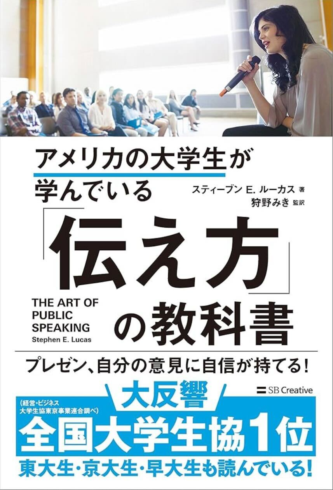

教科書輪読
『アメリカの大学生が学んでいる「伝え方」の教科書』や『経済論文の書き方』を題材とし、章ごとにテキストを区切って輪読を行います。5つのグループに分かれ、それぞれ担当箇所を精読し、まとめや解説を発表します。
経済学とデータ分析で身近な現象・課題を読み解く
身近な現象や課題について、「仮説設定 → データ収集 → 分析・解釈 → 論文執筆」のプロセスを自分で行う力を身につける
早稲田大学
教育・総合科学学術院 教育学部
医療経済学・応用ミクロ経済学
『アメリカの大学生が学んでいる「伝え方」の教科書』や『経済論文の書き方』を題材とし、章ごとにテキストを区切って輪読を行います。5つのグループに分かれ、それぞれ担当箇所を精読し、まとめや解説を発表します。
3つのグループに分かれ、それぞれが身近な社会問題や事象（例：学校ブランドと就職先の関係性など）を題材に、データ分析を用いた研究に取り組みます。最終的には、3年生の1月に他学部とのインゼミを実施し、各グループが研究成果を発表する予定です。

3年生のグループ論文の集大成として、他学部のゼミ（政治経済学部の別所ゼミ、人間科学部の川村ゼミ）と合同で研究成果を発表し、交流を行います。
毎回の授業の冒頭に1〜2人が担当し、各自が興味を持ったテーマを取り上げます。「記事を選んだ理由」「疑問に思ったこと」「社会的重要性」を中心に発表し、その後ゼミ生と意見を交換します。
グループ論文や卒業論文で使用する統計ソフトStataについては、3年生の春学期に開講される「公共市民学研究（プログラム評価のためのデータ分析）」や、ゼミ後半の授業で扱います。実際のオープンデータを用いながら、基礎から学習を進めます。
早稲田セミナーハウスにて1泊2日のゼミ合宿を行います。構想発表会、レクリエーション、観光、BBQなど多彩なイベントを通じて親睦を深めます。
・先生がどんな質問にも丁寧に答えてくれる
・先生が優しい
・本格的なデータ分析ができる
・発言しやすい
・etc